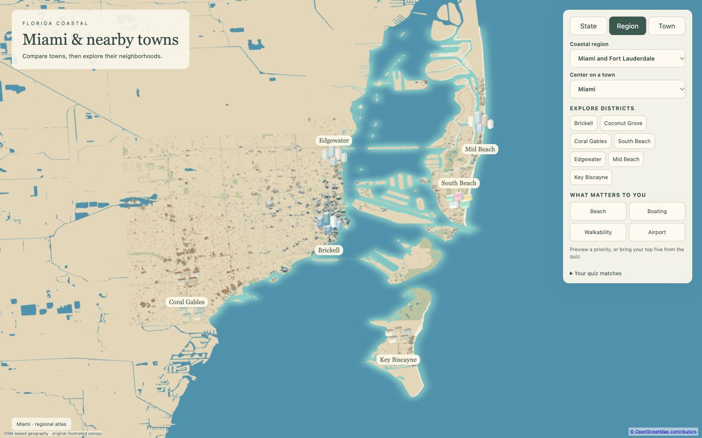
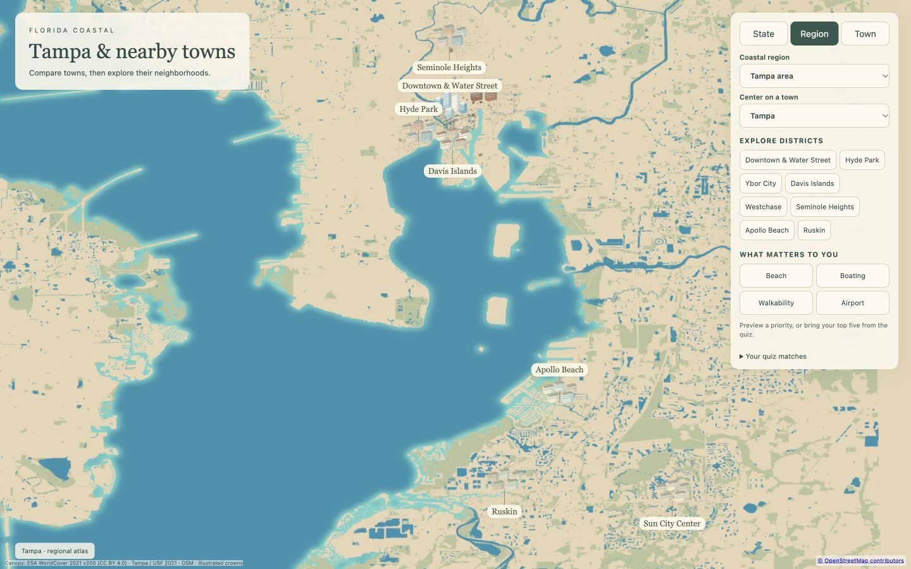
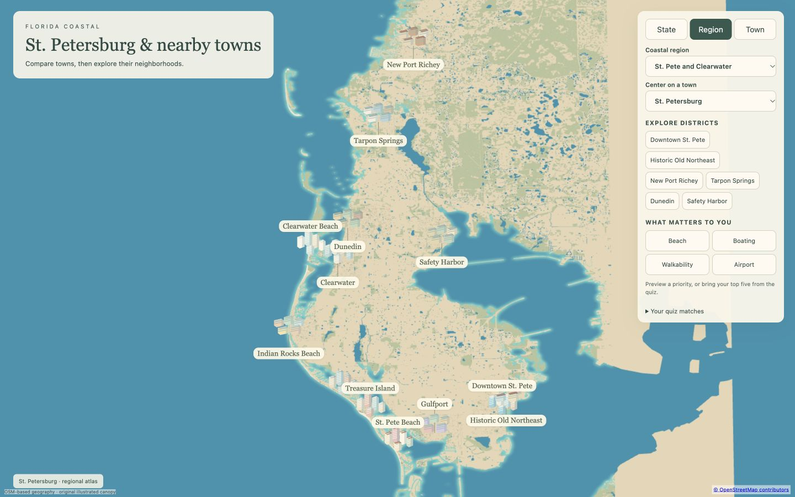

Miami
Region, South Beach and Brickell at 390 and 1440 px.
2.377 MB initial regional assets · maximum coastline-source difference 6.29 mShared exporter revised and Miami revalidated. Approved 30A artwork and layout preserved.

Region, South Beach and Brickell at 390 and 1440 px.
2.377 MB initial regional assets · maximum coastline-source difference 6.29 m
Nine districts; Region, Downtown, Hyde Park and Apollo Beach at both widths.
3.995 MB initial regional assets · maximum coastline-source difference 102.38 m
13 sourced districts; Region, Downtown, Old Northeast and St. Pete Beach at both widths.
3.964 MB initial assets · maximum coastline-source difference 84.28 mSt. Pete/Clearwater is ready for review. The remaining regions have not been exported or reviewed; the requested build order is preserved.
Source-alignment measurements are not independent survey accuracy. Physical midrange-phone loading time remains unverified.
Tampa — Hyde Park and Seminole Heights updated · Sarasota, Bradenton and Venice — next region ready for review
Both packages are below 4 MB at initial Region load. Physical-phone timing is unverified.